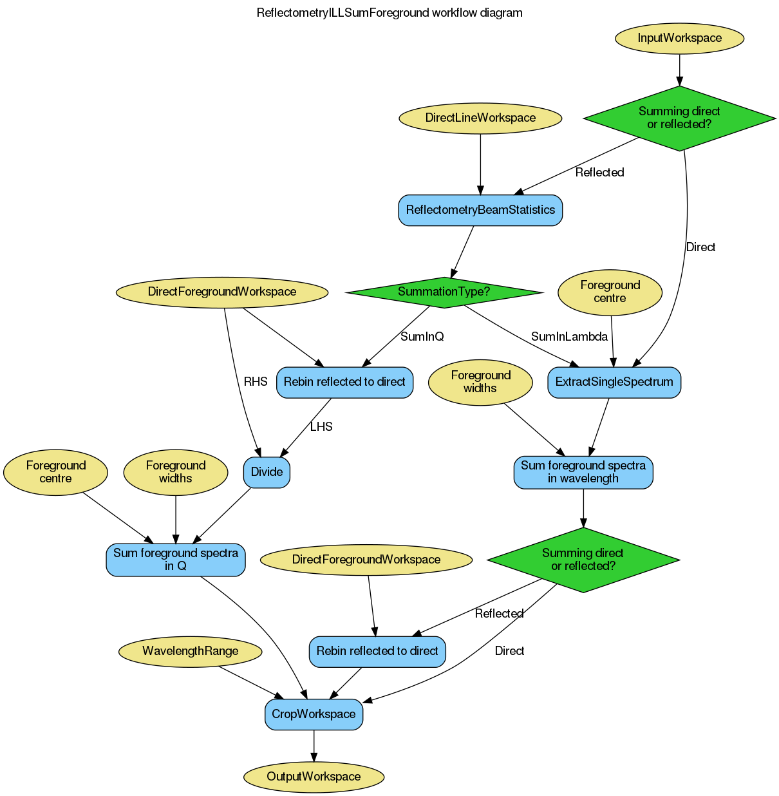

\(\renewcommand\AA{\unicode{x212B}}\)
ReflectometryILLSumForeground dialog.
Table of Contents
| Name | Direction | Type | Default | Description |
|---|---|---|---|---|
| InputWorkspace | Input | MatrixWorkspace | Mandatory | A reflected beam workspace (units wavelength). |
| OutputWorkspace | Output | MatrixWorkspace | Mandatory | The summed foreground workspace. |
| SubalgorithmLogging | Input | string | Logging OFF | Enable or disable child algorithm logging. Allowed values: [‘Logging OFF’, ‘Logging ON’] |
| Cleanup | Input | string | Cleanup ON | Enable or disable intermediate workspace cleanup. Allowed values: [‘Cleanup ON’, ‘Cleanup OFF’] |
| SummationType | Input | string | SumInLambda | Type of summation to perform. Allowed values: [‘SumInLambda’, ‘SumInQ’] |
| DirectForegroundWorkspace | Input | MatrixWorkspace | Summed direct beam workspace (units wavelength). | |
| Foreground | Input | long list | 2147483647,2147483647,2147483647 | A three element array of foreground start, centre and end workspace indices. |
| DirectLineWorkspace | Input | MatrixWorkspace | The (not summed) direct beam workspace (units wavelength). | |
| WavelengthRange | Input | dbl list | 0 | The wavelength bounds. |
This algorithm is typically the second step in the reflectometry reduction workflow. It consumes the output of ReflectometryILLPreprocess, producing a workspace with a single spectrum.
The reflectivity output of this algorithm can be forwarded to ReflectometryILLConvertToQ or, in case of polarization analysis, ReflectometryILLPolarizationCor.
The following diagram gives an overview of the algorithm:
The algorihtm runs ReflectometryBeamStatistics when processing the reflected beam. This adds some sample log entries to OutputWorkspace and DirectLineWorkspace. See the algorithm’s documentation for more details.
The SummationType property controls how the foreground pixels are summed.
The chosen SummationType will be added to the sample logs of OutputWorkspace under the foreground.summation_type entry.
If InputWorkspace has been processed by ReflectometryILLPreprocess, the foreground information is available in the sample logs under the entries starting with foreground.. By default these are used automatically.
The sample logs can be overridden using the Foreground property. It is a list of three integers defining the range and centre pixels as workspace indices: [start, centre, end]. The start and end values are inclusive.
Note
To run these usage examples please first download the usage data, and add these to your path. In Mantid this is done using Manage User Directories.
Example - Sum in wavelength
# Use same foreground and background settings for direct and reflected
# beams.
# Python dictionaries can be passed to algorithms as 'keyword arguments'.
settings = {
'ForegroundHalfWidth':[5],
'LowAngleBkgOffset': 10,
'LowAngleBkgWidth': 20,
'HighAngleBkgOffset': 10,
'HighAngleBkgWidth': 50,
}
# Direct beam
direct = ReflectometryILLPreprocess(
Run='ILL/D17/317369.nxs',
Measurement='DirectBeam',
**settings
)
# We need the summed direct beam for the reflectivity
directFrg = ReflectometryILLSumForeground(direct)
# Reflected beam
reflected = ReflectometryILLPreprocess(
Run='ILL/D17/317370.nxs',
Measurement='ReflectedBeam',
**settings
)
reflectivity = ReflectometryILLSumForeground(
InputWorkspace=reflected,
DirectForegroundWorkspace=directFrg,
DirectLineWorkspace=direct,
SummationType='SumInLambda',
WavelengthRange=[2, 15],
)
# Reflectivity is a single histogram
print('Histograms in reflectivity workspace: {}'.format(reflectivity.getNumberHistograms()))
# The data is still in wavelength
print('Reflectivity X unit: ' + reflectivity.getAxis(0).getUnit().unitID())
Output:
Histograms in reflectivity workspace: 1
Reflectivity X unit: Wavelength
Example - Sum in momentum transfer
# Use same foreground and background settings for direct and reflected
# beams.
# Python dictionaries can be passed to algorithms as 'keyword arguments'.
settings = {
'ForegroundHalfWidth':[5],
'LowAngleBkgOffset': 10,
'LowAngleBkgWidth': 20,
'HighAngleBkgOffset': 10,
'HighAngleBkgWidth': 50,
}
# Direct beam
direct = ReflectometryILLPreprocess(
Run='ILL/D17/317369.nxs',
Measurement='DirectBeam',
**settings
)
# We need the summed direct beam for the reflectivity
directFrg = ReflectometryILLSumForeground(direct)
# Reflected beam
reflected = ReflectometryILLPreprocess(
Run='ILL/D17/317370.nxs',
Measurement='ReflectedBeam',
**settings
)
reflectivity = ReflectometryILLSumForeground(
InputWorkspace=reflected,
DirectForegroundWorkspace=directFrg,
DirectLineWorkspace=direct,
SummationType='SumInQ',
WavelengthRange=[0., 14.]
)
# Reflectivity is a single histogram
print('Histograms in reflectivity workspace: {}'.format(reflectivity.getNumberHistograms()))
# The data is still in wavelength
print('Reflectivity X unit: ' + reflectivity.getAxis(0).getUnit().unitID())
Output:
Histograms in reflectivity workspace: 1
Reflectivity X unit: Wavelength
Categories: AlgorithmIndex | ILL\Reflectometry | Workflow\Reflectometry
Python: ReflectometryILLSumForeground.py (last modified: 2020-08-27)
{kind=link}